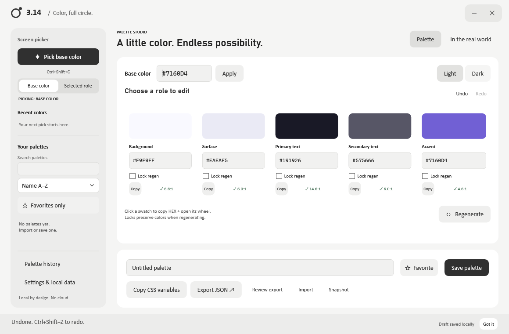

YOUR NEXT CHAPTER
Something worth making.
A small detail. A different feeling. The beginning of something good.
MADE FOR WINDOWS. LOCAL BY DESIGN.
A pixel that catches your eye. A palette that brings it all together. Meet 3.14, your desktop color picker & palette studio.
Pronounced Pi. No accounts. No cloud. No API keys.
From that one shade
to the whole picture.

A SHORTCUT TO SOMETHING GOOD
Keep the inspiration. Skip the busywork.
Press Ctrl + Shift + C to freeze your screen. Take a closer look, select a pixel, and its HEX is copied.
Build coordinated background, surface, text and accent colors. Lock the ones you love. Explore light and dark palette variants.
Try the colors on an interface. Check specific contrast pairs. Copy named CSS variables or export JSON for your next project.
A LITTLE ROOM TO EXPERIMENT
Try a few prepared palettes on the same interface. This is a small website demo; desktop screen picking happens in the Windows app.
Good ideas start small. Give yours a little space to grow.
YOUR NEXT CHAPTER
A small detail. A different feeling. The beginning of something good.
One text pair is checked here. This is not a rating for the whole palette.
A configurable global shortcut, live editing, and undo when you change your mind.
Named palettes, favorites and recent colors, saved locally. Back them up on your terms.
Deterministic color logic. No AI service, sign-in, analytics or subscription.
BRING YOUR NEXT PALETTE FULL CIRCLE
For Windows 10 (1703+) and Windows 11, x64.
Requires .NET Framework 4.8. Portable and unsigned.
Choose a successful workflow run, then download its portable artifact. GitHub sign-in may be required. This is not a signed installer.
Yes. The native Windows app captures the desktop before displaying a frozen selection overlay. The sample above does not capture your screen.
The app shows WCAG contrast ratios for specific text and background pairs. A passing pair does not make the whole palette or interface universally accessible.
On your computer, in %LOCALAPPDATA%\3.14\library.json. There are no accounts or cloud sync. The app includes library backup and validated restore.
Output is SDR sRGB HEX. HDR and wide-gamut colors may differ. Protected content can be unavailable; secure screens cannot be sampled. Mixed-DPI and multi-monitor hardware still need real-world verification. Read all capture limitations.
Pronounced Pi: a nod to the color wheel and the complete pick → generate → preview → export journey. It is a brand connection, not a claim that π makes better palettes. Name availability has not been verified.